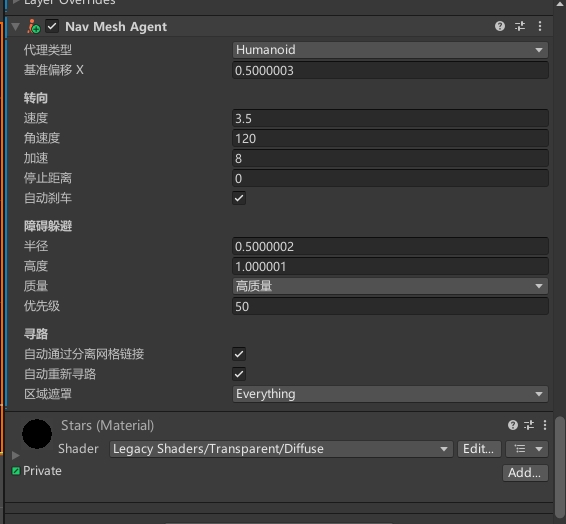

其他组件

Transform
用于控制游戏对象的位置、旋转和缩放等变换操作。它是所有游戏对象的基础组件之一，可以实现游戏对象的移动、旋转和缩放等操作。
Transform 可以控制游戏对象的位置、旋转和缩放等变换操作。它是游戏对象的基础组件之一，可以通过修改其属性来实现游戏对象的移动、旋转和缩放等操作。其中，位置属性控制游戏对象的世界坐标，旋转属性控制游戏对象的旋转角度，缩放属性控制游戏对象的缩放比例。
Transform 还支持父子关系，即一个游戏对象可以成为另一个游戏对象的子对象，这样当父对象移动、旋转或缩放时，其子对象也会相应地进行变换操作。此外，Transform 还提供了一些方法，例如 LookAt()、Rotate()、Translate() 等，可以实现更加灵活的变换操作。
总之，Transform 是 Unity 中控制游戏对象变换的基础组件之一，可以实现游戏对象的移动、旋转和缩放等操作。它是游戏开发中不可或缺的工具，可以提高游戏的可玩性和视觉效果。
Mesh Filter
用于将网格数据应用到 3D 模型上。它是实现 3D 模型的重要组成部分之一，可以定义模型的形状和结构。
Mesh Renderer
用于将 3D 模型渲染到屏幕上。它是游戏中 3D 模型的重要组成部分之一，可以让游戏中的角色、场景和物品等立体化呈现。
碰撞器组件

Capsule Collider
用于将游戏对象转换为一个胶囊形状的物理碰撞体。Capsule Collider 可以与刚体组件一起使用，以便让游戏对象能够受到外力的作用，并且可以与其他类型的碰撞体进行碰撞检测。
Capsule Collider 可以被用于表示一些通常比较难以用简单几何体表示的物体，例如人物角色、动物等。Capsule Collider 的形状类似于一个胶囊，即上下两个半球面之间连接着一根圆柱体。这种形状能够很好地适应许多物体的形状，同时也能够提供更加准确的碰撞检测。
Capsule Collider 组件提供了许多属性，例如半径、高度、方向等，可以用来调整碰撞体的形状和大小，以便更好地适应不同类型的物体。通过调整这些属性，可以实现更加准确的碰撞检测，从而提高游戏的真实感和可玩性。
Mesh Collider
用于将游戏对象的 Mesh 网格转换为物理碰撞体，以便在游戏中进行物理交互。Mesh Collider 可以与刚体组件一起使用，以便让游戏对象能够受到外力的作用，并且可以与其他 Mesh Collider 或其他类型的碰撞体进行碰撞检测。
Terrain Collider
用于在场景中的地形（Terrain）上添加碰撞检测功能。当一个物体与Terrain Collider发生接触时，就会触发碰撞事件，从而可以实现各种游戏场景的交互效果。
Terrain Collider可以在Unity中的地形编辑器中自动生成，也可以手动添加到地形游戏对象上。它基于地形的高度图和纹理信息，自动生成一个准确的碰撞器，从而实现真实的碰撞检测效果。
Wheel Collider
用于模拟车辆的轮胎碰撞效果。它可以将车辆的轮胎与地面进行真实的碰撞检测，从而实现车辆的运动效果。
当一个车辆游戏对象上添加了Wheel Collider组件后，该组件会自动根据车轮的位置和半径生成一个碰撞器。车辆在运动过程中，Wheel Collider会根据车轮的旋转情况和与地面的接触情况，计算出车轮的运动状态，包括速度、加速度、阻力等，并将这些信息反馈给车辆游戏对象，从而实现真实的车辆运动效果。
物理组件
Fixed Joint
用于将两个游戏对象固定在一起，从而实现刚体之间的约束。它可以模拟物理学中的刚体连接效果，使得两个游戏对象的运动状态相互影响。
Fixed Joint通常用于模拟各种机械装置、建筑物结构等，例如门、桥梁、吊车等。当两个游戏对象之间添加了Fixed Joint组件后，它们就会被连接在一起，从而形成一个整体。在运动过程中，它们的位置和旋转状态会相互影响，从而实现真实的物理效果。
除了基本的连接功能外，Fixed Joint还支持多种参数设置，例如连接的刚体、连接的点、最大力矩等。开发者可以根据游戏需求调整这些参数，以实现更加精确的连接效果。
总的来说，Fixed Joint是实现游戏物理效果的一个非常有用的组件，可以让开发者轻松地模拟刚体之间的连接效果，从而实现各种有趣的游戏场景。
Spring Joint 2D
用于模拟弹簧的力学效应，使得两个游戏对象之间产生弹簧效果。它可以模拟物理学中的弹簧连接效果，使得两个游戏对象之间产生拉扯的力量。
Spring Joint 2D通常用于模拟各种弹簧装置、弹性物体等，例如弹簧床、绳索、弹性球等。当两个游戏对象之间添加了Spring Joint 2D组件后，它们就会被连接在一起，从而形成一个弹簧。在运动过程中，它们之间的距离和速度会相互影响，从而产生弹簧效果。
Friction Joint 2D
用于模拟两个游戏对象之间的摩擦力效果，使得它们之间的运动产生摩擦力。它可以模拟物理学中的摩擦效应，使得两个游戏对象之间的运动更加真实。
Friction Joint 2D通常用于模拟各种摩擦装置、滑动物体等，例如滑动门、滑动箱子等。当两个游戏对象之间添加了Friction Joint 2D组件后，它们就会产生摩擦力，从而影响它们之间的运动。在运动过程中，它们之间的摩擦力会随着运动速度的变化而改变，从而实现真实的摩擦效应。
Distance Joint 2D
用于模拟两个游戏对象之间的距离约束，使得它们之间的距离保持不变。它可以模拟物理学中的距离效应，使得两个游戏对象之间的运动产生约束。
Distance Joint 2D通常用于模拟各种物体的连接、绳索等，例如吊车、绳索桥等。当两个游戏对象之间添加了Distance Joint 2D组件后，它们就会被连接在一起，从而形成一个约束。在运动过程中，它们之间的距离会保持不变，从而实现真实的距离效应。
Target Joint 2D
用于模拟物体的跟踪效果，使得一个游戏对象能够跟随另一个游戏对象的运动轨迹。它可以模拟物理学中的跟踪效应，使得游戏对象之间的运动更加真实。
Target Joint 2D通常用于模拟各种追踪效果、跟踪导弹等，例如追踪摄像机、跟踪器等。当一个游戏对象添加了Target Joint 2D组件后，它就会跟随另一个游戏对象，从而实现跟踪效果。在运动过程中，它们之间的距离和速度会相互影响，从而产生真实的跟踪效果。
Hinge Joint 2D
用于模拟物体的旋转效果，使得两个游戏对象之间产生旋转约束。它可以模拟物理学中的旋转效应，使得两个游戏对象之间的运动更加真实。
Hinge Joint 2D通常用于模拟各种旋转装置、旋转门等，例如旋转门、旋转关节等。当两个游戏对象之间添加了Hinge Joint 2D组件后，它们就会被连接在一起，从而形成一个旋转约束。在运动过程中，它们之间的旋转约束会随着运动角度的变化而改变，从而实现真实的旋转效应。
导航组件

Nav Mehs Agent
用于实现游戏对象的导航功能。Nav Mesh Agent通常用于模拟各种导航效果，例如角色移动、AI行为等。
Nav Mesh Agent可以将一个游戏对象移动到指定位置，并且可以自动避免障碍物。例如，当玩家指定一个位置时，Nav Mesh Agent会自动计算最短路径，并且在移动时避免障碍物，从而实现自动导航的效果。
Nav Mesh Agent还支持多种参数设置，例如移动速度、加速度、角色半径等。开发者可以根据需求调整这些参数，以实现更加精确的导航效果。
总的来说，Nav Mesh Agent是Unity中实现导航功能的一个非常有用的组件，可以让开发者轻松地实现各种导航效果，从而实现各种有趣的游戏场景。
Nav Mesh Obstacle
用于在场景中创建动态障碍物，以影响Nav Mesh Agent的自动导航行为。Nav Mesh Obstacle可以让开发者在运行时添加或移除障碍物，从而实现更加灵活的导航功能。
Nav Mesh Obstacle可以被添加到任何游戏对象上，它会在导航网格中创建一个障碍物区域，阻止Nav Mesh Agent在该区域内移动。在设置Nav Mesh Obstacle时，开发者需要指定障碍物的形状、大小、旋转等属性，以及障碍物的类型（例如，墙壁、栅栏、桌子等）。
Off Mesh Link
用于在导航网格上创建离散的连接点，以实现Nav Mesh Agent之间跨越障碍物或空隙的导航。通常，在场景中出现的一些特殊情况，例如悬崖、吊桥、绳索等，需要Nav Mesh Agent能够跨越障碍物进行导航，这时就需要用到Off Mesh Link。
音频组件

Audio Source
用于在场景中播放音频。开发者可以将Audio Source组件添加到游戏对象上，并将音频文件添加到Audio Source组件中进行播放。
在设置Audio Source时，开发者可以指定音频文件、音量、音调、循环播放等属性。Audio Source还支持3D音效，可以让音效在空间中产生方向和距离的变化，从而增强游戏的真实感和沉浸感。
除了播放音频，Audio Source还可以用于检测碰撞事件。开发者可以在Audio Source组件中设置碰撞器，当其他游戏对象与碰撞器发生碰撞时，Audio Source会自动播放指定的音频文件，从而实现碰撞音效的效果。
Audio Source还支持动态更新，可以在运行时更改音频文件、音量、音调等属性。这使得开发者可以根据游戏的需求实时调整音效，以增强游戏的体验效果。
总的来说，Audio Source是实现游戏音效的一个非常有用的组件，可以让开发者轻松地实现各种类型的音频播放和碰撞音效效果。
Audio Listener
用于监听场景中的音频，并将其转换为可听的声音。每个场景中只能有一个Audio Listener，它通常被添加到主摄像机上，以便根据摄像机位置和方向来监听音频。
当Audio Listener接收到音频时，它会根据音频源的位置、方向和距离等信息，将音频转换为可听的声音，并将其输出到扬声器或耳机中。Audio Listener还支持3D音效，可以根据音频源的位置和距离等信息，产生方向和距离的变化，从而增强游戏的真实感和沉浸感。
Audio Reverb Zone
用于模拟音频的混响效果。它可以将场景中的音频信号经过处理，产生类似于在一个封闭空间中听到声音的效果。在游戏中，Audio Reverb Zone通常被用于模拟不同环境下的声音效果，例如室内、室外、山洞等。
当Audio Reverb Zone被添加到游戏对象上时，它会创建一个虚拟的混响空间，在这个空间中播放的音频会受到混响效果的影响。开发者可以在Audio Reverb Zone组件中设置混响的属性，例如混响时间、混响强度、混响预设等。这些属性可以影响混响效果的强度和表现形式。
Audio Low Pass Filter
用于控制音频的低频信号。它可以通过降低音频的低频信号来模拟不同的音效，使得音频更加真实。
Audio Low Pass Filter通常用于模拟各种音效，例如低沉的嗓音、远处的声音等。当一个音频源添加了Audio Low Pass Filter组件后，它就会对音频进行低频信号过滤，从而模拟不同的音效。
Audio Hight Pass Filter
用于控制音频的高频信号。它可以通过降低音频的高频信号来模拟不同的音效，使得音频更加真实。
Audio High Pass Filter通常用于模拟各种音效，例如尖锐的声音、近处的声音等。当一个音频源添加了Audio High Pass Filter组件后，它就会对音频进行高频信号过滤，从而模拟不同的音效。
Audio Echo Filter
用于在音频中加入回声效果。它可以模拟不同的回声效果，使得音频更加真实。
Audio Echo Filter通常用于模拟各种音效，例如在山洞或大厅中的声音回声。当一个音频源添加了Audio Echo Filter组件后，它就会对音频进行回声处理，从而模拟不同的回声效果。
Audio Distortion Filter
用于在音频中加入失真效果。它可以模拟各种失真效果，使得音频更加独特。
Audio Distortion Filter通常用于模拟各种音效，例如吉他失真效果、电子音乐等。当一个音频源添加了Audio Distortion Filter组件后，它就会对音频进行失真处理，从而模拟不同的失真效果。
Audio Chorus Filter
用于在音频中添加合唱效果。合唱效果是指将多个声音混合在一起，产生更加丰富、立体的音效。
Audio Chorus Filter通过改变音频的时间和频率，来模拟多个声音同时发生的效果。它包含多个参数，例如混响、延迟、振幅等，可以用来调整合唱效果的强度、深度和速度等。

Sun Jinkang
9+1=10
77
0
2